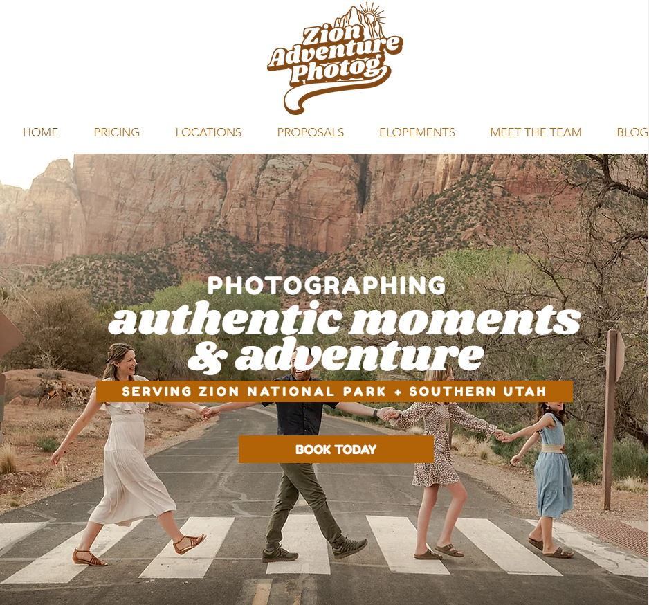

BLOGs

Zion Adventure Photog
When you're first approaching the question of how to start a blog, check out Zion Adventure Photog.
The blog has a dual purpose: owner Arika’s photography portfolio and establishing her expertise of the Zion area.
With these, she’s able to make money blogging.
The blog’s ruggedly playful green and yellow color scheme evokes nature and sunshine. The blog’s homepage features visual
testimonials of happy clients enjoying their adventures. She embeds her Instagram Feed directly onto her site, spreading the word
about her service and drawing people deeper into her brand.
The blog design mirrors its content in depth and expertise. Detailed posts provide detailed guidance on activities such as canyoneering and hiking.
From the written content, it’s clear that Arika is an expert in her field, and the visuals confirm her photography skills.